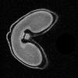

Introduction¶
Background¶
Esmraldi is a tool for any multimodal fusion task involving Imaging Mass Spectrometry images. Image fusion combines several imaging modalities to supplement the information given by each modality. In our case, we worked specifically on the fusion between IMS and Magnetic Resonance Imaging (MRI) images.

On one hand, Matrix Assisted Laser Desorption Ionization – Imaging Mass Spectrometry (MALDI–IMS) is an acquisition technique which produces images of ionized molecules in a sample. This acquisition technique is increasingly popular, with applications ranging from cancer research, forensics, to plant biology. However, the image encloses a large amount of information: hundreds of ions, that is to say charged molecules, are detected and their distribution does not necessarily reflect the anatomical structures in the tissue.
{kind=link}
On the other hand, Magnetic Imaging Resonance (MRI) images highlight the structural organization of a tissue. The intensity in the images reflect the proton density, which is often correlated to the amount of water. The difference in nature between the two imaging techniques makes it difficult to analyze the images jointly.
Scope and aims¶
The goal of Esmraldi is to solve the following scientific questions: which molecules co-localize with water? From an image analyst standpoint, this means finding the ion images in MALDI-IMS whose intensity distribution correlate with the intensity distribution in MRI images.
We proposed a new workflow to solve this problem. Esmraldi is the source code of this workflow.
There are four main steps in our workflow:
- Image pre-processing: reduction of MALDI images, spectra processing
- Segmentation: extraction of the object of interest apparent in both imaging modalities
- Registration of the segmented shapes: matches the shapes so that they can be compared
- Statistical analysis: correlation between MRI and MALDI images
More generally, Esmraldi can be used in any multimodal fusion task involving IMS images and is not restricted to MRI images.